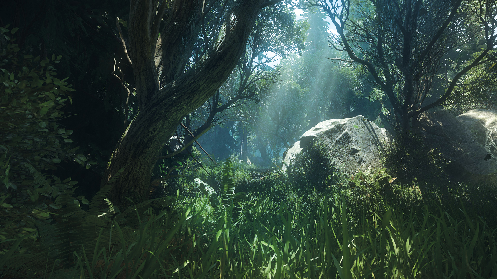

Обзор
В этом разделе описывается процесс создания объектов растительности в CRYENGINE. Он разбит на разные разделы, в зависимости от типа растительности, которую вы хотите создать. Для подробного описания этого конвейера будет выделена отдельная категория.
Дополнительную информацию об использовании редактора растительности см. HERE. В этом разделе рассматривается конвейер создания активов.

Основные категории:
- Трава (патчи) многоплоскостная геометрия
- Трава (объединенная сетка) простая геометрия
- Кусты (изгиб деталей) с применением шума для имитации движения
- Кусты (сгибание касанием) позволяют взаимодействовать с другими физическими объектами.
- Деревья (логическое разрушаемое значение)
- Деревья (Деформировать)
Некоторые технологии, которые мы используем в нашей растительной системе, например: гибка деталей, не ограничиваются кустами. Вы можете применить ту же технологию к деревьям, поскольку их можно модифицировать, имитируя движение растительности.